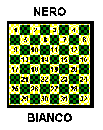
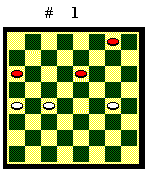

FINALI TEORICI
(Ultima revisione il 21.01.2003)

I finali teorici sono finali con un
numero limitato di pezzi, che si presentano frequentemente in gioco vivo,
per i quali si può dar conto con linee di gioco relativamente semplici.
La padronanza dei finali teorici è fondamentale per "vincere le partite vinte" e per fissare in modo corretto gli obiettivi da porsi in centro partita e in finale.

Per un esempio concreto, si consideri la posizione del Diagramma 1. Il Nero muove.Se gioca 4-8, perde. Il Bianco con 20-16 blocca pedina in 8. Poi entrambi damano le pedine in 11 e 18, ma la dama bianca , con la mossa in favore, spinge la dama nera nel biscacco inferiore e vince il finale teorico di Prima Posizione.
Il Nero invece patta con 4-7, 20-16, 11-15, 18-14 ecc. perché fa due dame, come da finale teorico di tre dame contro due dame e una pedina.
In tutti i finali presi in esame
in questo testo, per convenzione, il Bianco è il partito in vantaggio.
Corso di Dama